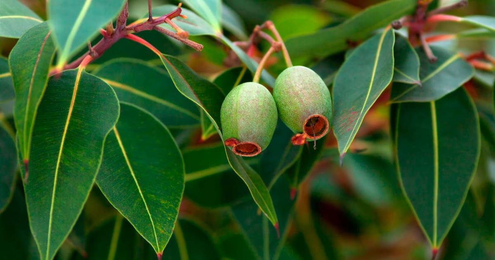
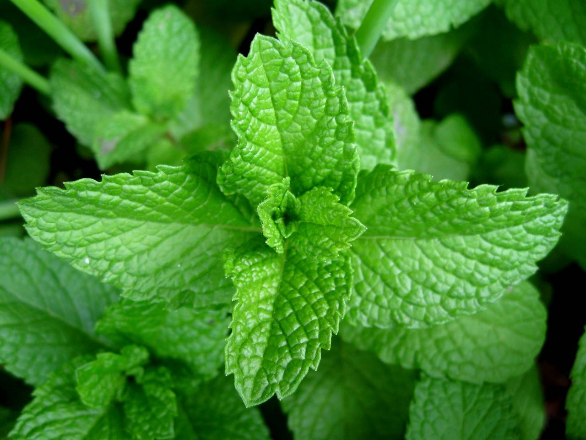

Plantas Respiratorias

Eucalipto
Eucalyptus globulus
Xita yo̱to̱
Gordolobo
Verbascum thapsus
Yo ts'i

Menta
Mentha spicata
Menta
×
Lenguaje denotativo
Árbol medicinal conocido por sus hojas aromáticas, utilizadas para aliviar afecciones respiratorias.×
Descripción literaria
El eucalipto desprende un aroma fresco que parece limpiar el aire y despejar el pecho.×
Usos medicinales
Se utiliza en vaporizaciones e infusiones para aliviar la tos, descongestionar y mejorar la respiración.×
Importancia cultural
Es una de las plantas más utilizadas en remedios caseros para tratar gripa y problemas respiratorios.×
Lenguaje denotativo
Planta herbácea de hojas suaves y flores amarillas, conocida por sus propiedades expectorantes.×
Descripción literaria
Sus flores amarillas guardan el calor del sol y alivian el pecho en tiempos de frío.×
Usos medicinales
Se emplea en infusiones para aliviar la tos, expulsar flemas y calmar irritaciones de garganta.×
Importancia cultural
Forma parte de muchos remedios tradicionales usados en comunidades rurales durante la temporada de frío.×
Lenguaje denotativo
Planta aromática de hojas verdes y olor intenso, ampliamente utilizada en medicina tradicional.×
Descripción literaria
La menta refresca el aliento y deja una sensación de ligereza que parece abrir el pecho.×
Usos medicinales
Ayuda a descongestionar las vías respiratorias y aliviar molestias leves de garganta.×
Importancia cultural
Es común en los hogares para preparar infusiones y vapores durante resfriados.